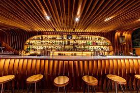

1. Paradiso
Barcelona, Spain
Stood in front of a fridge door in an otherwise regular pastrami shop, it’s hard to imagine what might confront you next. You are about to step foot in the majestic Dali-esque curved wooden bar that is Paradiso – the 2022 World’s Best Bar, sponsored by Perrier. Once in, the surprises keep on coming, starting with the show-stopping Supercool Martini, which uses a ‘supercooled’ gin mix to build an iceberg in the glass. There’s also a new menu, fresh from the imagination of creative-in-chief and co-owner Giacomo Giannotti.
In the past, themes have encompassed magic and space, and this year the inspiration is the Evolution of Humankind. Of the 15 new cocktails, try Fleming, inspired by the discovery of penicillin, which explores fermentation with a mushroom spore rim. But for more aesthetic drama, the hot tot is On Fire, a sharing milk punch cocktail, with bourbon, oloroso sherry, tahini, sweet potato and smoked milk. Served in a clear, round dish, with garnishes created in the Paradiso lab to represent humankind’s ancestors sitting around a fire, the cocktail uses a laser to create a flame which smokes the Jerez wine. Drinks don’t look or taste like this anywhere but at Paradiso.
Contact Paradiso
Carrer de Rera Palau, 4, 08003 Barcelona
Visit Paradiso on Facebook
Visit Paradiso on Instagram
